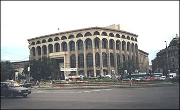
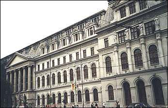
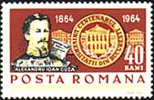
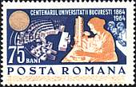
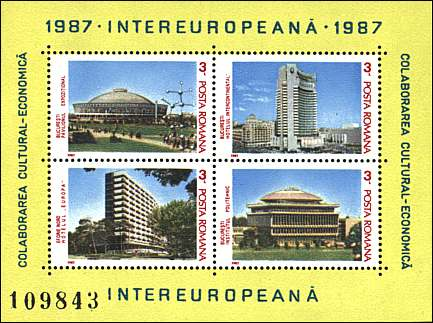
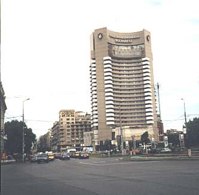
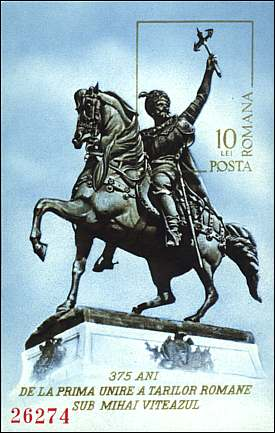
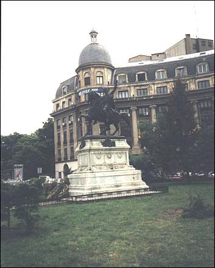

|
The Historical Center of Bucharest The University Square |
Romania is many things to many people. To me Romania is firstly its capital Bucharest, a metropolis with over 2 millions inhabitants where I lived 27 years. Nobody knows the entire Bucharest and even the most experienced taxi driver is obliged from time to time to use a map. But every inhabitant knows the central part of its city, and especially the University Square, usually considered as the center of Bucharest.
 |
 |
The Square is bordered by several impressive buildings, the oldest being the University of Bucharest (above, on the right) and the newest being the building of the National Theater (on the left). I known very well this part of the Bucharest, because during five years I studied at this university and graduated here in physics. Just to notice that the physics faculty isn't located anymore in this strategic place.
 |
 |
The stamps above, issued in 1964, commemorate the centenary of the Bucharest University. The university was founded by Alexandru Ioan Cuza, the prince whose election in 1859 permitted the union of principalities of Wallachia and Moldova, the nucleus of the future Romanian state.
 |
 |
On the above sheet, the stamp
on the first row, on the right, and also on the snapshot on the left
you can see the modern building of the Intercontinental Hotel, the
highest construction found in the center of Bucharest.
The University Square became renown due to the
revolt of the youth and students against the post-communist leaders
and their followers, after the popular 1989 uprising. The decided
youth resisted to several assaults of police and of mine workers,
manipulated by the forces previously mentioned. Officially called
"golani" (hooligans) by the former (and then re-elected)
President, they were proud of this label and some have even written it in big
characters on their clothes.
 |
 |
On the opposite site of the University building there are four statues of Romanian personalities. The most interesting of these, shown above, is the statue of Mihai Viteazul (Michael the Brave, 1558 - 1601). This Walachian prince succeeded in unifying for a short time the three Romanian principalities, Walachia, Moldova and Transylvania. Every Romanian has learned in the school the classical verse: "And the hatchet in his left reaches the heavens, And the Prince is a mountain!"
All snapshots on this page were taken in May 2001 by site's author. Please point toward the images with the mouse index for more information.
| Published:
06/29/2001. Revised:
02/14/2018
. Copyright © 2001 - 2018 by Victor Manta, Switzerland. All rights reserved worldwide. |